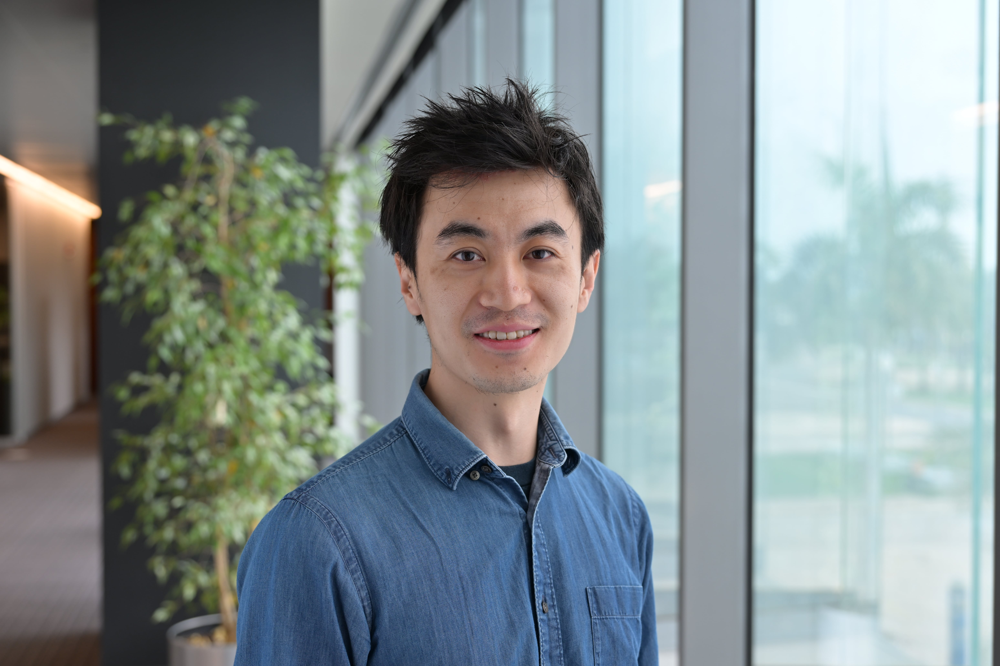

Associate Professor | Ocean University of China
Applied Mathematics · Scientific Machine Learning · AI for PDEs
I am an Associate Professor at Ocean University of China. My research develops mathematical and computational tools for scientific machine learning, with an emphasis on neural operators, neural-network theory, and efficient solvers for multiscale partial differential equations.
Previously, I was a Postdoctoral Fellow in Computer, Electrical and Mathematical Science and Engineering at King Abdullah University of Science and Technology (KAUST) (2022–2025), working with Prof. Jinchao Xu. I received my Ph.D. in Applied Mathematics from Shanghai Jiao Tong University in 2021 under the supervision of Prof. Lei Zhang, and was a visiting scholar at Caltech with Prof. Houman Owhadi in 2019–2020.
I develop AI-driven numerical methods for scientific computing, especially for multiscale problems and partial differential equations. My work connects approximation theory and numerical analysis with modern machine learning.
My work has appeared in Journal of Computational Physics, SIAM Multiscale Modeling & Simulation, Applied and Computational Harmonic Analysis, NeurIPS, ICLR, and LoG.
Xinliang Liu
Ocean University of China, Qingdao, China
Email: xlliu2017@qq.com